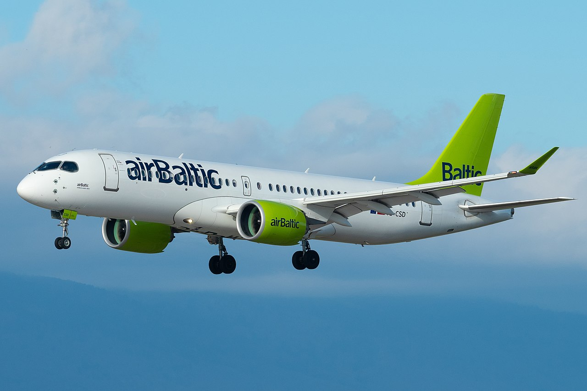
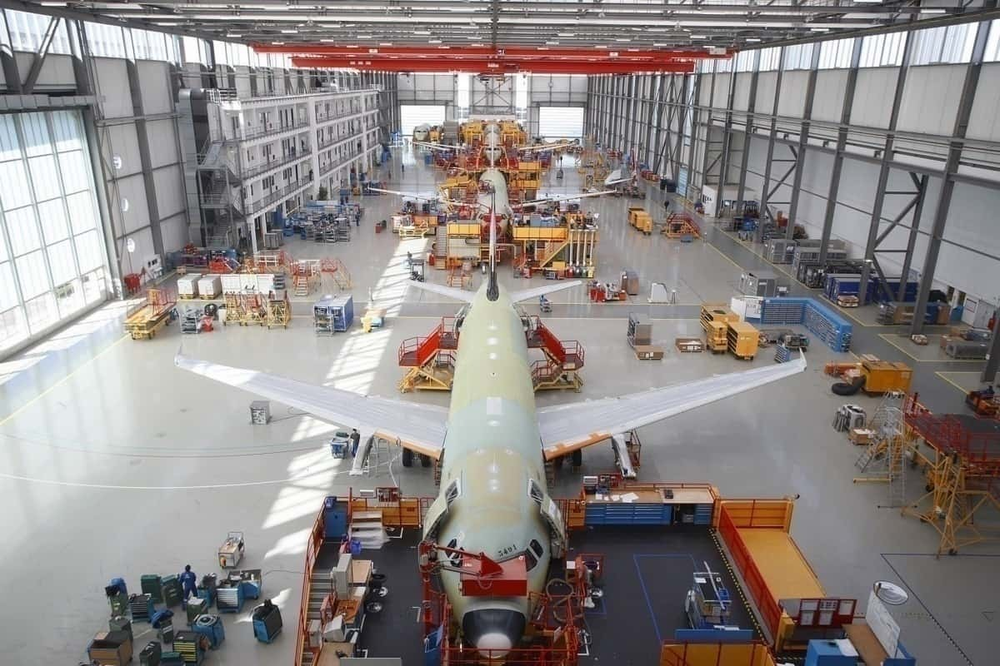

Limba:
Airbus a livrat numai avioane de distanta scurta în iulie
7 august 2020 Joi, Airbus a anunțat că a livrat 49 de aeronave în iulie. Numerele au crescut în raport cu lunile anterioare, dar includeau doar avioane înguste din familiile A220 și A320neo. Aproape jumătate încă nu au intrat în funcțiune.
Primii A321neo pentru doi transportatori
În ultima lună, Airbus a livrat 49 de aeronave, toate din soiul îngust. Doi A220-300 s-au deplasat la Air Canada și Egipt Air, iar restul de 47 au fost din familia A320neo.
Aceasta a inclus Middle Eastern Airlines '(MEA) și primele avioane A321neo de la Vistara. Vistara, livrată pe 24 iulie, are o clasă de afaceri cu paturi. Din păcate, conform datelor de pe Planespotters.net, aeronava rămâne deocamdată parcată.

Aproximativ jumătate din avioane rămân parcate
Din familia rămasă livrată A320neo, câțiva au mers la transportatorii chinezi. Unul a mers la China Eastern Airlines, unul la Hong Express, unul la Colorful Guizhou Airlines, unul la Qingdao Airlines, unul la Juenyao și unul la Loong Air.
În Europa, doi au mers la Wizz Air, trei la easyJet, unul la TAP Air Portugal, unul la Lufthansa, iar S7 a luat unul. În SUA, două au fost livrate la American Airlines, iar trei la Frontier. Între timp, în Orientul Mijlociu, Arabia Saudită Flynas a preluat un A320neo, iar unul a plecat în EgyptAir.
Au existat îngrijorari că majoritatea aeronavelor livrate în aceste circumstanțe fără precedent s-ar duce direct la depozitare; ceea ce pare a fi adevărat pentru aproximativ jumătate dintre ei. Majoritatea adăugărilor la piața chineză sunt listate ca fiind în funcțiune, la fel și Wizz's, S7 și două din Frontier.
Anunțuri implicite și livrare electronică
Potrivit Reuters , Airbus a emis avize de întârziere și a amenințat să dea în judecată acei transportatori care nu acceptă livrarea avioanelor deja construite. Astfel, poate că nu este surprinzător că companiile aeriene aleg să accepte aeronave pentru care nu au încă niciun folos.
Cu toate acestea, compania a fost mai flexibilă în amânarea comenzilor pentru jeturi încă de construit. Între timp, Airbus a confirmat pentru Bloomberg, că livrările sunt susținute de opțiunea de livrare electronică fără contact, care permite aeronavei să schimbe mâinile fără a încălca protocoalele de precauție pentru sănătate.
Noi comenzi pentru prima dată în luni
Deși niciunul dintre avioanele de la Airbus nu a plecat pentru noii lor proprietari în cursul lunii, există totuși motive de optimism. Livrările au crescut de la 36 în iunie, iar producătorul a primit primele noi comenzi în trei luni.
Acesta a vândut două A320neo unui client nevăzut și două A321neos către Lufthansa Technik. Îmbrăcămintea de modificări responsabilă de prima transformare a încărcării A380 din lume a semnat un contract pentru echiparea avioanelor A321neoLR pentru forța aeriană germană . Livrarea avioanelor este de așteptat în 2022.
Compania Blue Air aduce în flotă un Boeing 737-700NG
7 august 2020
Compania low-cost Blue Air va recepționa în perioada următoare un Boeing 737-700NG.
Avionul, parcat momentan la Tallinn (Estonia), este închiriat de la compania de leasing Air Lease Corporation și va fi înmatriculat ca YR-BMR.
Pentru moment YR-BMR va fi singurul Boeing 737-700NG din flota Blue Air.
În 2021 compania Blue Air intenționează să opereze doar Boeinguri 737NG și MAX-uri, potrivit Oanei Petrescu, CEO Blue Air.
Citeste tot articolul aici. Sursa articolului: Compania Blue Air va aduce în flotă un Boeing 737-700NG. Acesta va fi înmatriculat YR-BMR și urmează să fie livrat în perioada următoare -- Boarding Pass
FAA propune penalități de 1,25 milioane de dolari pentru Boeing
7 august 2020
Administrația federală a aviației (FAA) a împărtășit ieri că propune două pedepse civile împotriva lui Boeing. În total, amenzile se ridică la 1,25 milioane dolari. Acestea se referă la acuzații de încălcări în program, care permite producătorului de planuri să îndeplinească anumite funcții în numele FAA.
Revendicările
Potrivit unui comunicat de presă al companiei Simple Flying, autoritatea aviației susține că managerii de la Boeing au exercitat o presiune nejustificată sau au intervenit în activitatea desemnaților săi la fabrica producătorului din Carolina de Sud. În primul rând, cea mai mare penalitate echivalează cu 1.066.655 dolari. Această sumă se referă la afirmația potrivit căreia Boeing a implementat o structură improprie a programului său autorizat de FAA (ODA), aprobat de FAA.
"Programul ODA autorizează Boeing să îndeplinească funcții aprobate în numele FAA, inclusiv inspecția aeronavelor și eliberarea de certificate de navigabilitate", a declarat FAA, conform comunicatului de presă.
„Între noiembrie 2017 și iulie 2019, angajații din două unități ODA au raportat managerilor care nu erau în funcții de conducere AOD aprobate. Boeing nu a reușit să se asigure că administratorii ODA erau în măsură să reprezinte eficient interesele FAA, susține FAA. "
Mai mult, există o afirmație legată de evenimente între septembrie 2018 și mai 2019. FAA afirmă că, în această perioadă, managerii Boeing non-ODA au exercitat presiuni nejustificate sau au intervenit membrii unității ODA.
Cealaltă amendă este pentru 184.522 de dolari. În cele din urmă, această penalizare se referă la pretențiile potrivit cărora Boeing nu a urmat procesele de control al calității în 26 februarie. Se presupune că producătorul a supus membrilor ODA o presiune nejustificată sau a intervenit într-o inspecție a navigabilității unei aeronave Boeing 787-9.

Obligații puternice
În ciuda acestor incidente, FAA afirmă că membrii unității ODA și-au îndeplinit responsabilitățile de a asigura conformitatea avioanelor și în condiții de funcționare sigură înainte de eliberarea certificatelor de navigabilitate. Autoritatea afirmă că, după ce a primit scrisori de executare, Boeing are 30 de zile pentru a răspunde.
Simple Flying a adresat lui Boeing pentru comentarii la declarația FAA. Un purtător de cuvânt al companiei a declarat că sancțiunile civile propuse anunțate reprezintă o reamintire clară și puternică a obligațiilor sale în calitate de titular al ODA. În plus, reprezentantul a spus că presiunea nejustificată de orice tip este în contradicție cu valorile firmei și nu va fi tolerată.
Boeing a concluzionat spunând că în ambele cazuri, afirmațiile au fost raportate în mod corespunzător, cercetate și dezvăluite FAA. Mai mult, acesta a spus că a pus în aplicare acțiuni corective pentru a răspunde ambelor incidente și a cooperat pe deplin cu investigațiile independente ale autorității.

Relație importantă
În total, Boeing va spera să rezolve această problemă cât mai curând posibil. Cele două organizații continuă să colaboreze strâns, în special în ultimul an cu saga 737 MAX . Prin urmare, colaborarea lor trebuie să fie cât mai lină posibil.